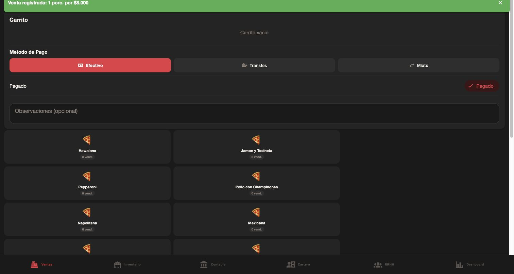
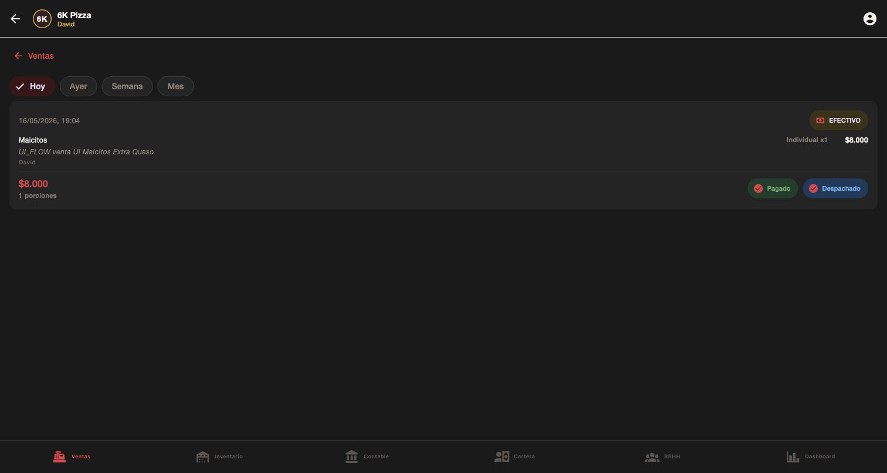
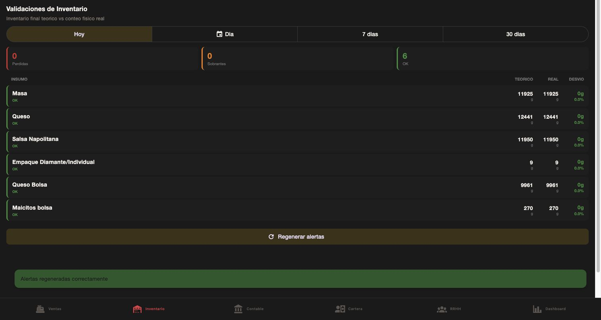
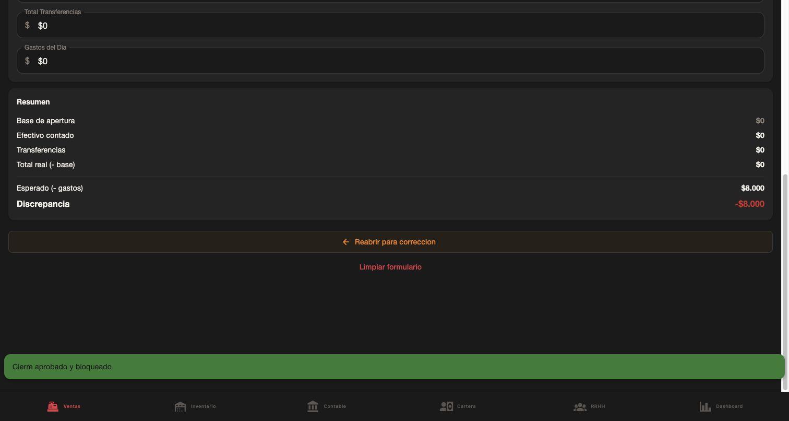

Estado final
Flujo funcional OK
Compra, produccion, traslado, venta, conteos, validaciones y cierre de caja quedaron creados desde pantalla y confirmados en base de datos.
Flujo ejecutado desde UI
Maicitos, 1000g, $5.000, proveedor UI_FLOW.
Receta Maicitos bolsa, 1 lote, produce 1000g y consume Maicitos RAW.
Stock base en Local 2 para receta, adicion, empaque y procesado.
3 bolsas de Maicitos bolsa y 10 unidades de Empaque Diamante/Individual.
Maicitos Individual + Extra Queso + Empaque, efectivo $8.000.
6 insumos OK, sin perdidas ni sobrantes.
Esperado $8.000, real $8.000, discrepancia $0, estado APPROVED.
Auditoria DB
| Registro | Cantidad | Estado |
|---|---|---|
| Purchases | 1 | OK |
| Production records | 1 | OK |
| Transfers | 1 | RECEIVED |
| Sales | 1 | Paid / Dispatched |
| Physical counts | 2 | Inicial + final |
| Daily alerts | 6 | Todos OK |
| Cash openings | 1 | Base $0 |
| Cash closings | 1 | APPROVED |
Saldos finales relevantes
| Ubicacion | Nivel | Insumo | Saldo |
|---|---|---|---|
| Centro de Produccion | RAW | Maicitos | 0g |
| Centro de Produccion | PROCESSED | Maicitos bolsa | 700g |
| Local 2 | STORE | Empaque Diamante/Individual | 9 und. |
| Local 2 | STORE | Maicitos bolsa | 270g |
| Local 2 | STORE | Masa | 11924.8g |
| Local 2 | STORE | Queso | 12441g |
| Local 2 | STORE | Queso Bolsa | 9960.9g |
| Local 2 | STORE | Salsa Napolitana | 11950g |
Validaciones
| Insumo | Teorico | Real | Diferencia | Estado |
|---|---|---|---|---|
| Masa | 11924.8g | 11924.8g | 0g | OK |
| Queso | 12441g | 12441g | 0g | OK |
| Salsa Napolitana | 11950g | 11950g | 0g | OK |
| Empaque Diamante/Individual | 9 | 9 | 0 | OK |
| Queso Bolsa | 9960.9g | 9960.9g | 0g | OK |
| Maicitos bolsa | 270g | 270g | 0g | OK |
Hallazgos y fixes
Timezone de ventas
La venta hecha a las 19:04 Colombia quedaba como 2026-05-17T00:04Z. Se corrigieron las consultas de ventas para usar rango UTC equivalente al dia Colombia.
Validaciones teoricas
El teorico ahora incluye receta base, adiciones y empaque, igual que la RPC deduct_inventory_for_sale.
Capturas clave




Documentos relacionados
Estos archivos quedan como soporte tecnico y handoff para la siguiente iteracion.